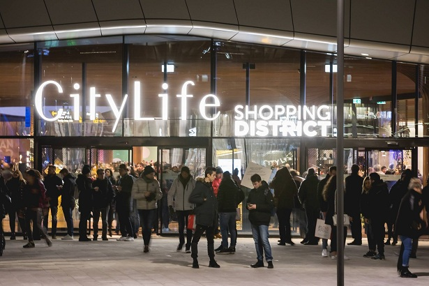
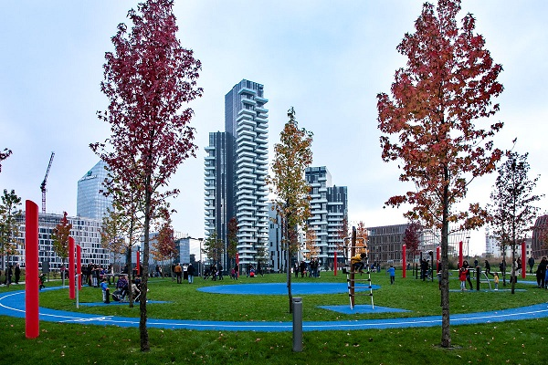

4 PLACES TO SOCIALIZE
CITYLIFE, NAVIGLI, PIAZZA GARIBALDI AND CA 'GRANDA are the four places we recommend to meet new people and to relax by strolling, shopping or cycling
CITYLIFE
In the area where today stands city life in the past was the old Milan’s fair.
City life Shopping District is the largest urban shopping district in Italy, it is a special place to shop.
There are also many different restaurants where you can stop for a good meal after shopping.
City life Shopping District is located in a pedestrian area, with underground parking.
Is a place very frequented by many young people.
In addition there is also a very large park where you can take long walks.
If you want to know more click here.
NAVIGLI
The Navigli are one of the most romantic areas for those who want to visit Milan and live authentic experiences.
The Navigli Milanesi are a system of artificial and navigable canals, which have the purpose of providing water to the city center and for the transport of goods.
In addition, In the city, there is a portion of the Naviglio della Martesana, a short segment of the Naviglio di San Marco as well as some historical locks and basins.
The Navigli are also a great destination for a walk or bike rid, for example following the navigli of Martesana. After a walk around the canals we recommend a restaurant where you can stop to eat, it is called: Pasta fresca da Giovanni and is located in Via Ascanio Sforza, 31.
PIAZZA GARIBALDI
Since ancient times it has carried out different functions: political, commercial, cultural, religious or even simple meeting place between people.
Today is a meeting space, which the pandemic has stopped for months, but which remains the basis of our lives.
But we must always remember the limitations imposed by Covid.
Here there are several clubs where young people love to gather, especially on weekends.
There are also many places of a certain level that are frequented by many celebrities.
This is why, even those who are in Milan for tourism, can’t help but visit.
Also in Garibaldi there is a park in which there is an area reserved for a small outdoor gym and in Piazza Gae Aulenti there are some shops and bars where you can stop after a walk in the park.
CA' GRANDA
The University of Milan, known as "Unimi" or "La Statale" is one of the most prestigious in Italy, but also a place that contains much of the artistic history of Milan.
Students gather here, so it’s a great place to meet new people. Many students for lunch gather at the cafeteria which is within walking distance of the university, located in Via della Signora, 3.
This place offers you good food and a place to rest.
Students from different courses go there, in fact the university offers courses of: Law, Linguistic and Cultural Mediation, Medicine and Surgery, Veterinary Medicine, Agricultural and Food Sciences, Medicine, Science and Technology, Sports Sciences, Political Sciences, Economics and Social Sciences, Humanities.
In addition to the cafeteria there are several places, very close to the university, where to study and spend time in company such as:
- the Bar Campus located in Via Festa del Perdono, 12;
- the Bar C'era Una Volta located in Via Festa del Perdono, 14.
If you are looking for a quieter place we recommend a quiet place, we advise you: library in Via Laghetto, 9/11, inside there is also a bar where you can have something to eat.
If you are looking for a place in the open air in Largo Francesco Richini there is a park just as close to the university.
We hope these places will be to your liking!